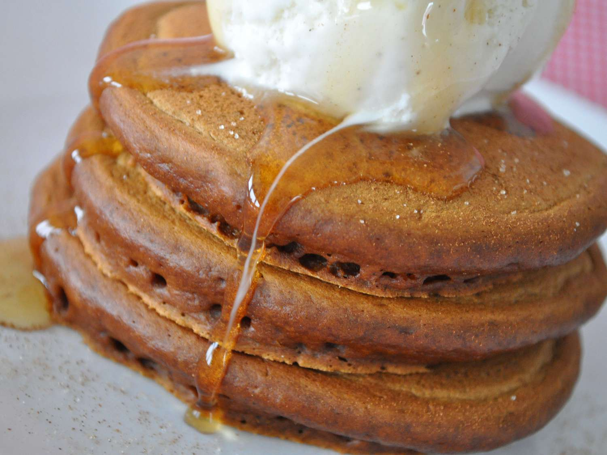

Grandma's Gingerbread Pancakes

Ingredients
- 1 ½ cups all-purpose flour
- 1 teaspoon baking powder
- ¼ teaspoon baking soda
- ¼ teaspoon salt
- ½ teaspoon ground dried ginger
- 1 teaspoon ground cinnamon
- 1 egg
- ½ teaspoon vanilla extract
- ¼ cup molasses
- 1 ½ cups water
Steps
- Whisk the flour, baking powder, baking soda, salt, ginger,
and cinnamon in a bowl; set aside. Beat the egg in a separate
mixing bowl with the vanilla and molasses until smooth.
Whisk in the water until completely incorporated.
Stir the flour mixture into the molasses mixture until just combined --
a few lumps are okay.
- Heat a lightly oiled griddle over medium-high heat.
Drop batter by large spoonfuls onto the griddle,
and cook until bubbles form and the edges are dry.
Flip, and cook until browned on the other side.
Repeat with remaining batter.